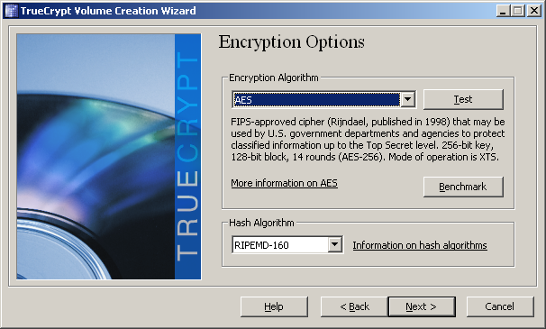

У каждого из нас есть данные, которые не очень хочется показывать кому-то другому. У кого-то это фотографии голого себя, у кого-то пароли от банк-клиента и хостинга.
Есть несколько способов хранить пароли:
- записать на бумажку — пожалуй самый ненадежный, бумажка легко находится другими людьми в самый непоходящий момент и сложно находится самим собой в момент нужный
- запомнить — отличный способ, подходит тем у кого два-три простых пароля
- записать в файлик — файлик можно еще куда-нибудь переписать в папку C:\Program Files\Java\jre6\bin\client и тогда точно никто не найдет. наверное.
Фотки и документы можно еще заархивировать в архив под пароль, а потом, чтобы вспомнить себя в молодости потратить минут 30 на разархивирование.
Прогрессивное человечество выбирает способ лучше.
Программа TrueCrypt позволяет создавать так называемые тома, которые будут зашифрованы с помощью так называемых алгоритмов шифрования (AES, Serpent, Twofish). Доступ к зашифрованным таким образом данным получить человеку не знающему пароль не получится уже никак.
Сам зашифрованный контейнер в системе будет выглядеть как обычный файл с любым именем и расширением. После монтирования файла он будет выглядеть уже как отдельный диск в системе.
Итак. Пройдемся по шагам как же создать шифрованный контейнер в TrueCrypt.
Для начала скачиваем и устанавливаем саму программу. Она бесплатна и мультиплатформенна.
После установки запускаем ее.
Переходим к созданию нового тома.
нет необходимости шифровать сейчас диск или раздел, поэтому выбираем первый пункт
в скрытом томе, нам мой взгляд, у большинства людей тоже нет необходимости, поэтому выбираем стандартный
здесь просто выбираем где будет храниться наш контейнер и, кликнув по кнопке «Select» вписываем его имя. Впоследствии том можно будет безболезненно переносить и переименовывать.
Алгоритмами шифрования не владею, поэтому выбираю первый пункт

Вводим размер будущего тома. Если вы планируете в нем хранить один текстовый файлик, то и том можно создать на 1 мегабайт. Если планируете зашифровать фотографии, то посмотрите сколько они занимают у вас на диске и сделайте с запасом. Другими словами вы сейчас создаете новый диск и определяете его размер.
Создаем пароль. Умная программа не разрешит сделать простой пароль.

Чтобы создать файлик нажмите на кнопку «Format». Не стоит бояться этого слова.
Все.
Чтобы смонтировать полученный том просто выберите его в главном окне программы, выберите букву нового диска и нажмите кнопку «Mount»
Его содержимое появится в виде выбранного диска в вашей системе.
Он пока пустой. Можете переписать туда все что захочется, и таким образом скрыть все, что показано.
После окончания работы с контейнером не забывайте его размонтировать. Диск в системе исчезнет, а данные будут надежно зашифрованы.
О том как автоматизировать эту работу я писал здесь